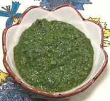

|
Cilantro SauceGeorgia - Kindzis Satsebela | ||||
| Makes: Effort: Sched: DoAhead: |
4 cups *** 4-1/2 hrs Yes |
This incredibly delicious sauce (you'll want to eat it by the spoonful) is used as a dressing in bean and potato salads, over roasted eggplant slices and boiled potatoes, as well as with grilled meats and chicken. | |||
|
2 1/4 ------- 1-1/2 1-1/2 1/2 ------ 1/2 4 ------ 1/4 1-1/2 1/3 1/4 ------ 1 |
oz c --- c c c --- c cl --- c t t t --- c |
Apricot Leather (1) Water, boiling -- Herb Mix Cilantro (2) Herbs, mixed (3) Scallions (4) ------------ Walnuts, shelled Garlic -- Finish items Lemon Juice Salt Pepper black Chili Powder (5) ---------- Oil (6) |
Prep - (2 hrs (see Note-7)
|